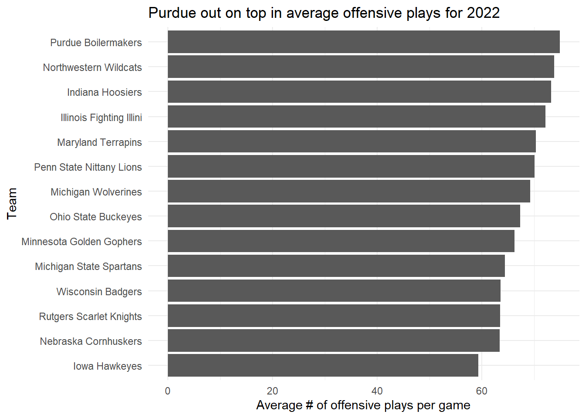
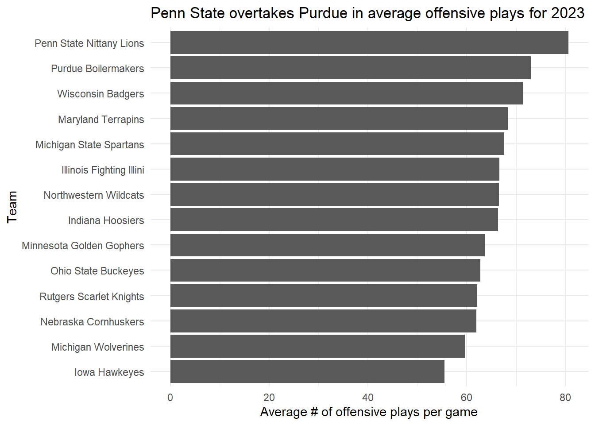

Purdue dethroned in average offensive plays for 2023 NCAA football season
Author
Mitchell Hang
Published
October 10, 2023
Code
library(tidyverse)
Warning: package 'tidyverse' was built under R version 4.2.3
Warning: package 'ggplot2' was built under R version 4.2.3
Warning: package 'tibble' was built under R version 4.2.3
Warning: package 'readr' was built under R version 4.2.3
Warning: package 'purrr' was built under R version 4.2.3
Warning: package 'dplyr' was built under R version 4.2.3
Warning: package 'lubridate' was built under R version 4.2.3
── Attaching core tidyverse packages ──────────────────────── tidyverse 2.0.0 ──
✔ dplyr 1.1.2 ✔ readr 2.1.4
✔ forcats 1.0.0 ✔ stringr 1.5.0
✔ ggplot2 3.4.3 ✔ tibble 3.2.1
✔ lubridate 1.9.2 ✔ tidyr 1.3.0
✔ purrr 1.0.2
── Conflicts ────────────────────────────────────────── tidyverse_conflicts() ──
✖ dplyr::filter() masks stats::filter()
✖ dplyr::lag() masks stats::lag()
ℹ Use the conflicted package (<http://conflicted.r-lib.org/>) to force all conflicts to become errors
Code
library(scales)
Attaching package: 'scales'
The following object is masked from 'package:purrr':
discard
The following object is masked from 'package:readr':
col_factor
Here I am loading the library items that will help me construct my code for this exercise.
Rows: 1672 Columns: 54
── Column specification ────────────────────────────────────────────────────────
Delimiter: ","
chr (8): HomeAway, Opponent, Result, TeamFull, TeamURL, Outcome, Team, Con...
dbl (45): Game, PassingCmp, PassingAtt, PassingPct, PassingYds, PassingTD, ...
date (1): Date
ℹ Use `spec()` to retrieve the full column specification for this data.
ℹ Specify the column types or set `show_col_types = FALSE` to quiet this message.
Rows: 752 Columns: 54
── Column specification ────────────────────────────────────────────────────────
Delimiter: ","
chr (8): HomeAway, Opponent, Result, TeamFull, TeamURL, Outcome, Team, Con...
dbl (45): Game, PassingCmp, PassingAtt, PassingPct, PassingYds, PassingTD, ...
date (1): Date
ℹ Use `spec()` to retrieve the full column specification for this data.
ℹ Specify the column types or set `show_col_types = FALSE` to quiet this message.
Here I am loading the two online datasets for 2022 and 2023 separately into RStudio.
Code
big10 <-c("Nebraska Cornhuskers", "Iowa Hawkeyes", "Minnesota Golden Gophers", "Illinois Fighting Illini", "Northwestern Wildcats", "Wisconsin Badgers", "Indiana Hoosiers", "Purdue Boilermakers", "Ohio State Buckeyes", "Michigan Wolverines", "Michigan State Spartans", "Penn State Nittany Lions", "Rutgers Scarlet Knights", "Maryland Terrapins")
This code block constructs a filter category of all the Big Ten colleges to be used in the 2022 and 2023 datasets. Alternatively, one could filter the datasets directly by conference.
Here, I am mutating the 2022 dataset to show the results I would like. I begin by implementing the Big Ten filter category, selecting only the columns showing the full team name and the number of offensive plays for each game, and grouping by the full team name. Then, I use the summarise/ze function to create new columns showing the total number of offensive plays for each team, the number of games each team played during the season, and the calculated average number of offensive plays per game for each team. I then arranged the teams in descending order by the latter column, and we can see that the Purdue Boilermakers have a wide lead for their total offensive plays, thereby resulting them having the highest average offensive plays per game during the 2022 season, as there is about one play separating the Boilermakers and the Northwestern Wildcats and half a play separating the Wildcats and the Indiana Hoosiers. I would say that these team results are relatively close to one another.
Code
ggplot() +geom_bar(data=logs_22_filtered, aes(x=reorder(TeamFull, AvgOffensivePlaysPerGame),weight=AvgOffensivePlaysPerGame)) +scale_y_continuous(labels=comma) +labs(title="Purdue comes out on top in average offensive plays for all Big Ten \ncolleges in 2022 college football season", x="Team", y="Average # of offensive plays per game") +theme_minimal() +coord_flip()

Here, I am constructing a stacked bar graph that shows the average number of offensive plays for each team in the Big Ten Conference for the 2022 college football season. I decided to go with a stacked bar graph because the names of the teams are quite long and they would cross into one another otherwise, and also because it will be easier to see any differences from one team to another rather than a regular (i.e., vertical) bar graph.
This graph, we can see that Purdue has the highest average number of offensive plays for all Big Ten colleges during the 2022 college football season. There are relatively small margins from one team to another on this graph, with the largest separation being between the Nebraska Cornhuskers and the Iowa Hawkeyes. Some teams have played for fewer games compared to Purdue (they have played the most, at 14 games) during the 2022 season, and it’s possible that the ranking would’ve changed had they played more games.
Here, I am doing the exact same steps I used to mutate the 2022 dataset for the current 2023 dataset. Here, we can see that the Penn State Nittany Lions have overtaken the Purdue Boilermakers in average offensive plays per game in the 2023 season by about six plays. The Wisconsin Badgers have moved up considerably from last year’s ranking, as they are currently now behind Purdue by no more than two plays.
Code
ggplot() +geom_bar(data=logs_23_filtered, aes(x=reorder(TeamFull, AvgOffensivePlaysPerGame),weight=AvgOffensivePlaysPerGame)) +scale_y_continuous(labels=comma) +labs(title="Penn State currently overtaking Purdue in average offensive plays \nfor all Big Ten colleges in 2023 college football season", x="Team", y="Average # of offensive plays per game") +theme_minimal() +coord_flip()

Here, we see that the Penn Stake Nittany Lions have currently dethroned the Purdue Boilermakers for having the highest average offensive plays for all Big Ten colleges in the 2023 college football season, and it’s evident from the graph that there’s a much wider margin between the top two teams compared to the top 2 and top 3 teams, top 3 and top 4 teams, etc. It can be assumed that Penn State was pushing more offensive plays in their games since being ranked sixth in average offensive plays from last year. Interestingly, if we go back to the tibble from earlier, Penn State has played five games whereas Purdue has played six, and Purdue has a few dozen more offensive plays than Penn State. It’s possible that the separation between the current top two teams in average offensive plays wil grow larger once Penn State completes their sixth game.
In conclusion, I thought this was an interesting exercise in creating bar graphs to tell a story about a certain college’s rise or fall in the sports world. I was honestly surprised to see Purdue lose their lead in average offensive plays for another team, considering how dominant they were in having the highest offensive plays during the 2022 college football season. Considering that the 2023 college football season is still in progress, it’s unknown if the ranking will remain as is or if Purdue (or another team) takes back their lead, and maybe another team will make a surprising move up or down from last year’s ranking.